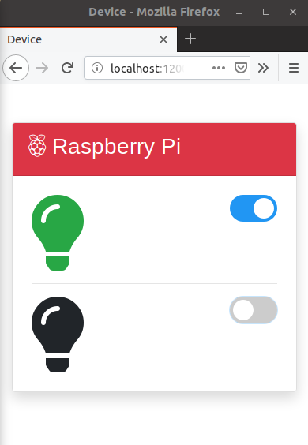
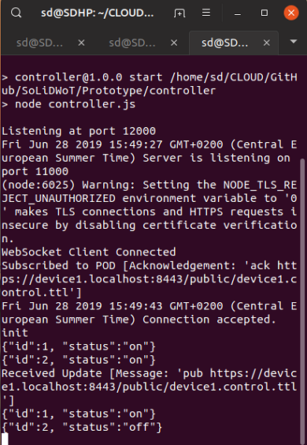
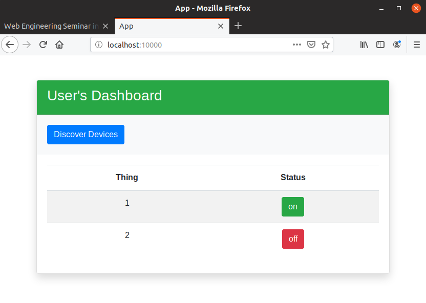

Professur Verteilte und Selbstorganisierende Rechnersysteme
Technische Universität Chemnitz
Chemnitz, Deutschland
1. Introduction
Making a simple everyday objects smart by connecting it through the web is not new to us now, we can find
many smart devices in our surrounding from small light bulb to big screen TV. Web Decentralization is also
the hot topic now, no any private firms or centrally located server should use your data for their potential
advantage, user must have control over their data, they should only have the rights to give the permission
to others to access their data but this is not the case nowadays. Many big tech firms are collecting the
users data and using them for the financial benefits.
Above we introduced two different things one Web of Things(Smart devices) other Web Decentralization. Our
whole report focuses on these two topics. We will be discussing about Web Of Things and for Web
Decentralization we will be discussing about the Social Linked Data(SoLiD). SoLiD is a Web Decentralization
project led by the creator of Web Tim Berners Lee. In simple words, Web of things is something where
everyday objects is connected with the Web.
Further more, we did some research about these topic and tried to implement the SoLiD as the platform for
the WoT. Although Wot is now widely used, SoLiD is relatively new topic and there are very few research and
work done to bring these two topics(WoT and SoLiD) together and implement to produce some output. Here, we
have tried our best to bring two topics together and prepared the demo as well which we will be discussing
further.
2. Background Study
2.1. Web of Things
For the deatil understandings of Web Of Things, Lets break it into two parts, i.e. Web and Things.
Starting with the web.The Web is the common name for the World Wide Web, a subset of the Internet
consisting of the pages that can be accessed by a Web browser.[1]Before doing some
research in this topic we had a common dis belief that web and the internet are the same things where both
the terms we used interchangeably. But now, we came to know that both are not same. Internet is the physical
network, the infrastructure or the global networks of networks whereas the web is the application layer on
top of internet. Web is the collection of many documents(resources) where each resource is identified by
URL(Uniform Resource Locator). We can also say that Web is the logical network working on top of internet.
The things in Web Of Things refers to anything that has connection to the internaet and is able to
send and recieve data over some predefined protocols. The things is typically a computing device. For an
everyday object to be qualified as a thing, there are some typical criterias to be fulfilled which are
listed below.
− Identification and information storage (RFID tags, MAC address)
− Information collection (Sensor networks, store sensor values)
− Information processing (Understanding commands, filtering data)
− Communications (Transmit and receive messages),
− Actuation (Switch control, motor control)
As a whole, The Web of Things (WoT) is a computing concept that describes a future where everyday
objects are fully integrated with the Web.[2]. Here, we will not be developing any new
kind of communication mechanism between things and the web, the existing protocols and system will be used
for the communication[2]. Basically WoT architecture consist of Four layers.
-Accessibility Layer (Deals with the access of things to the Internet)
-Findability Layer (To provide a way to find and locate things on the Web)
-Sharing Layer (Deals with the idea of things pushing data to the Web)
-Composition Layer (Integrates the services and data offered by things into higher level Web tools)
Figure 1: Different Layer Of WoT
2.2. SoLiD Ecosystem
As mentioned earlier, SoLiD is a Web Decentralization project led by the creator of Web Tim Berners
Lee. Decentralized Web is the Web runs across a number of machines that are owned by regular users
rather than owned in a central place like a server. In simple words, decentralized web is the web that we
are using it today but the individual user's will be having full control of their data rather than relying
on any centralized server.
Linked Data is a structured data where different data are interlinked. Linked data are described
based on some semantic vocabularies. Linked data can be accessed through semantic queries. The data that
are found over the web is also linked with anchor tags with other data, we were confused at the begining
that why those type of data are not called link data since it was linked, the main difference between
the Linked data we are talking about here and the data linked by the anchor tags is that the accessing
of data using semantic queries. The data found over the web linked through anchor tags cannot be
accessed using the semantic queries.[3]
Solid (derived from "social linked data") is a proposed set of conventions and tools for building
decentralized Web applications based on Linked Data principles.[4]Today’s web
applications is centralized for a variety of reasons. User data became the source of power and income
for many big companies.[5] Lets take an example of different existing social media
like facebook, twitter etc. User uploads photo, they like and dislike the different items. There are
many ways where the user is providing their personal
data to social medias, and they is using those data to target the Ads based on the data accumulated from
ther user.We can assume that those social media are using high security technologies to keep those data
safe, but how can we be assured that the social media giants are selling data to third party without the
users consent.Recently one of the social media giant facebook's data was shared with third party where
the third party uses the users data to their own benefit[6]. And another problem is of
data replication, lets take another example. Let's say you are using different web application which
requires your personal informationlike your job position. You updated the job position in Linked In, but
it wont automatically update the data in other platforms, to update in other platforms you have to go to
every platform manually and and replicate the same old data. So, to overcome these
problem SoLiD is the solution. SoLid provides POD(Personal Online Data) which is simply a folder where
the user can store their data and have full control over it, Users decides for which application or user
to give what type of permission to acces the POD. Below are the list of SoLiD Specification.
• Identity (WebId)
• Profiles
− WebID Profile Documents
• Authentication
− Primary Authentication: WebID-TLS
− Alternative Authentication Mechanisms
− Secondary Authentication: Account Recovery
• Authorization and Access Control
− Web Access Control
• Content Representation
− RDF in the form of JSON-LD, Turtle, HTML+RDFa, etc
• Reading and Writing Resources
− HTTPS REST API
− WebSockets API
• Social Web App Protocols[7]
SoLiD Specs In Detail: Each entity(users or things) is identified by uniquely assigned WebID.
Typical WebID looks like this (https://alice.databox.com/profile/card#me or
http://somepersonalsite.com/#webid) [7]. Each WebID is linked with the WebID
Profile document which consists of user identity, security credentials, and user preferences discovery.
Solid, being a decentralized web application platform, has a set of requirements for its authentication
mechanisms that are not commonly encountered by most platforms and ecosystems. Specifically, it requires
cross-domain, de-centralized authentication mechanisms not tied to any particular identity provider or
certificate authority.[7]
For the authentication SoLid uses WebID-TLS as primary authentication and the password recovery through
email s used as the secondary authentication mechanism. When accessing a Solid server using WebID-TLS, a
user is presented by their web browsers with a popup asking them to select an appropriate security
certificate for that site.[7]
Web Access Control is used for Authorization and Access Control. Web Access Control (WAC) is a
decentralized system that allows different users and groups various forms of access to resources where
users and groups are identified by HTTP URIs. RDF in the form of JSON-Linked Data or
Turtle format or other different format can also be used for the content representation. For reading and
writing the resources it uses REST API working on top of HTTP and also the web sockets can be used.
To write data, clients can send an HTTP PATCH request with a SPARQL payload to the resource in question.
If the resource doesn't exist, it should be created through an LDP POST or through a PUT. For instance,
to update the title of the container from the previous example, the client would have to send a DELETE
statement, followed by an INSERT statement. Multiple statements (delimited by a ;) can be sent in the
same PATCH request.[7]
PATCH /data/ HTTP/1.1
Host: example.org
Content-Type: application/sparql-update
DELETE DATA { <> <http://purl.org/dc/terms/title> "Basic container" };
INSERT DATA { <> <http://purl.org/dc/terms/title> "My data container" }
For the live updating the data it is only possible to use WebSocket. To subscribe to a resource, clients
will need to send the keyword sub followed by an empty space and then the URI of the resource:
sub https://example.org/data/test
If a change occurs and the client is subscribed to that resource, it will receive a WebSocket message
composed of the keyword pub, followed by an empty space and the URI of the resource that has changed:
pub https://example.org/data/test
Social Web App Protocols are still under reseach and will be
in use in near future.[7]
2.3. SoLiD as the platform for WoT
Researching about two different topic and implementing it as a one was a challenging tasks to us. Making the
Web of Things work using SoLiD as platform for it. As we have mentioned earlier WoT architecture consists of
four layers i.e (Accessibility Layer, Findability Layer, Sharing Layer , Composition Layer), SoliD provides
us different facilities or resources to use it in every layer of WoT.
For accessing the Things (Accessibility Layer), we can use REST (Representational State Transfer) Interface.
Similarly for finding or discovering things RDF (Resource Description Framework) and SPARQL. SPARQL is the
language used for quering the RDF documents, RDF is specially used for writing semantic query for retrieving
and manipulating the data which are stored in the RDF Format. Now, the Sharing of data (Sharing Layer),
SoLiD provides us the POD(Personal Online Data), its the place where we can create, read, update and delete
the data. And lastly, For Actuating things(Composition Layer), SoLid supports web socket which can be used
for actuating the things and also the SPARQL can be used in this layer in order to making some semantic
queries over different datas.
3. Related Works and Recommendations
Using the semantic technology is not a new topic for IoT/WoT paradignm. Many authors have addressed the
interoperability problem from different point of view over the years. Some of them focused on the
shareability layer
[13] whereas others concern was about the accessibility layer [16]. Some perceived the entire system
under the
hood of semantic technology [17]. These comprehensive studies highly adopts the concepts of linked-data
priciples and the application of
linked data in IoT/WoT domain. Several works have been focused on using linked data technologies in IoT
domain [18].
In the context of our work, we found the best motivation from Käfer et all. in [14] where authors described
how WoT can be seen in the lenses of linked data technologies. Authors have described a framework called
WiLD where every layer of WoT is covered under linked data platform. Consequently, authors recommended SoLiD
to be used in the shareability layer.
4. Demo: WoT Application on top of SoLiD
4.1 The Concept
Our background study on SoLiD and WoT have lead us to develop a concept which utilizes SoLiD ecosystem to
foster WoT applications. Related works at [14] also supports our idea to a great extent.
Figure-2 best describes our concept of integrating Things inside the SoLiD
environment to make them accessible, controllable and sharable from the web through a semantic interface.
Here, the SoLiD server acts as the glue between the two entities User Agent and the Host Device. We describe
these entities in the following subsections.
4.1.1 Host-Device
The Host-Device refers to the computing unit which hosts an instance of a SoLiD server. It brings all the
smart things under the SoLiD ecosystem through a controller-module. The controller module has been developed
in such a way so that it can act as the interface between the SoLiD server and the things. The POD
facilitates necessary files to discover the things, to control them , or to share data. The host device
authenticates user-agents and authorizes actions as described
in the SoLiD specification [7]. Rasberry Pi [9], Arduino Uno [10] etc. can be think of such devices.
4.1.2 User-Agent
The user-agent can be thought of as a piece of software by which users will be able to interact with the
things over the web. Since it is possible to execute semantic query over these things, an intelligent
machine or an application can also act as a user agent. A user agent can discover things from the POD, fetch
the data and can even send control signals.
Figure-2 : Proposed System Architecture.
4.2 The Demo
As described in the concept, Figure-3 represents the Host device. We initiate our
device by starting the SoLiD Server. The controller-module synchronizes all the things with the SoLiD POD.
If
any change to a thing is detected by the controller module it updates the POD.
Figure-5 represents a simple
web app which simulates a user agent. Whenever, the agent presses the discover button it performs two
actions: (1)
Synchronizes the UI with the current sate of the POD, (2) Subscribes the POD for further updates through the
Web Socket. Whenever any changes occur to any thing it gets the immediate update from the
POD. Whenever user press on/off in the UI it sends a control message to the POD using HTTP PATCH request
method.
As soon as the POD is updated, the controller module grabs that and synchronizes the things accordingly. Figure-4
shows some example transactions between the user agent and the host device.

Figure 3: Host Device.

Figure 4: SoLiD Server Console.

Figure 3: User Agent (Application).
4.2.1 Things Description
For demonstration purpose we have described the device and the things with two basic classes rdf:type and
td:thing. A data property "hasStatus" describes the on/off status of the things. This "hasStatus" property
has been used to control the state of the things. A glimpse of the Turtle file can be found below.
file: device.ttl
@prefix d: <https://myhome/device#> .
@prefix td: <https://www.w3.org/2019/wot/td#>.
d:device1
a d:device ;
d:hasThing d:thing1, d:thing2 .
d:thing1
a td:thing ;
d:hasStatus true .
d:thing2
a td:thing ;
d:hasStatus false .
4.2.2 Used technologies
We have used the Node.js development environment to develop our user agent and to simulate the host device.
We have used the implementation of node-solid-server [19]. We have developed the
controller module on top of SoLiD Server. For realtime communication we have used the WebSocket
protocol and for semantic query we have used the Rdflib.js [20] library.
4.3 Challenges
The first challenge we faced was to describe things. To overcome that we consulted with the W3C Things
Descripting
Ontology [11] which provides a very comprehensive set of classes and attributes to deal
with the WoT things.
We further consulted with the SSN ontology [12] for a clear picture although we didn't
use them for the demo.
Secondly, actuating things was one of the noteworthy problem. We solved that using the WebSocket protocol
firmly supported by
the SoLiD server.
5. Conclusion
WoT is an application paradigm involving a set of autonomous devices capable of communicating with
each other. On the other hand, SoLiD project has been developed to support the concept of decentralization
and user data independence. Our Proof of concept demonstrates that SoLiD can foster WoT to a great extent
which leads us to a new research direction in the context of linked data and web decentratization in the IoT
domain.
SoLiD is evolving to support the Web infrastructure in general. The decentralized nature of SoLiD is highly
capable of facilitating WoT applications. But, it is also noteworthy that, current WoT infrastructure
includes some devices
which are not capable of hosting SoLiD due to low processing capability and lower level protocol support
like
MQTT & COAP etc. Some workaround is still needed to bring those devices under the hood of SoLiD
ecosystem
[13] Bajaj, G., Agarwal, R., Singh, P., Georgantas, N., & Issarny, V. (2017).
A study of existing Ontologies in the IoT-domain. arXiv preprint arXiv:1707.00112.
[14] Käfer, T., & Harth, A. (2018, October). Specifying, monitoring, and
executing workflows in linked data environments. In International Semantic Web Conference (pp. 424-440).
Springer, Cham.
[15] Sambra, A. V., Mansour, E., Hawke, S., Zereba, M., Greco, N., Ghanem, A., ...
& Berners-Lee, T. (2016). Solid: A Platform for Decentralized Social Applications Based on Linked Data.
[16] Noura, M., Heil, S., & Gaedke, M. (2019, June). Webifying Heterogenous
Internet of Things Devices. In International Conference on Web Engineering (pp. 509-513). Springer, Cham.
[17] Pfisterer, D., Römer, K., Bimschas, D., Kleine, O., Mietz, R., Truong, C.,
... & Karnstedt, M. (2011). SPITFIRE: Toward a Semantic Web of things. IEEE Communications Magazine,
49(11), 40-48.
[18] Qin, Y., Sheng, Q. Z., & Curry, E. (2015). Matching over linked data streams
in the internet of things. IEEE Internet Computing, 19(3), 21-27.